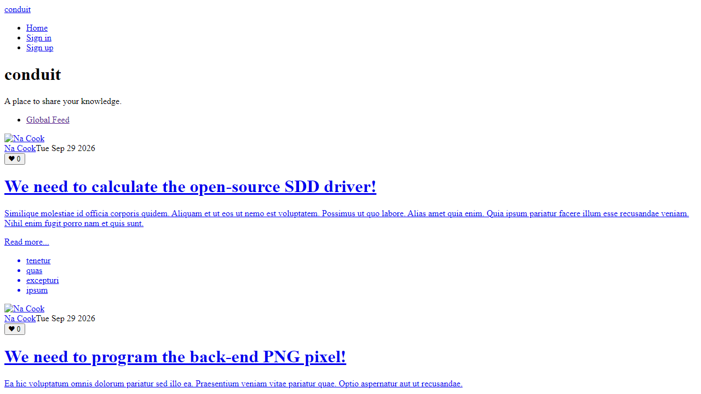
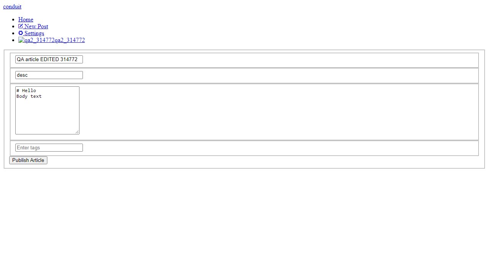
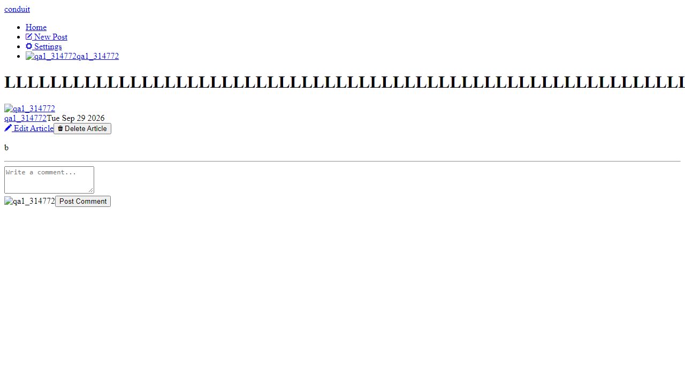
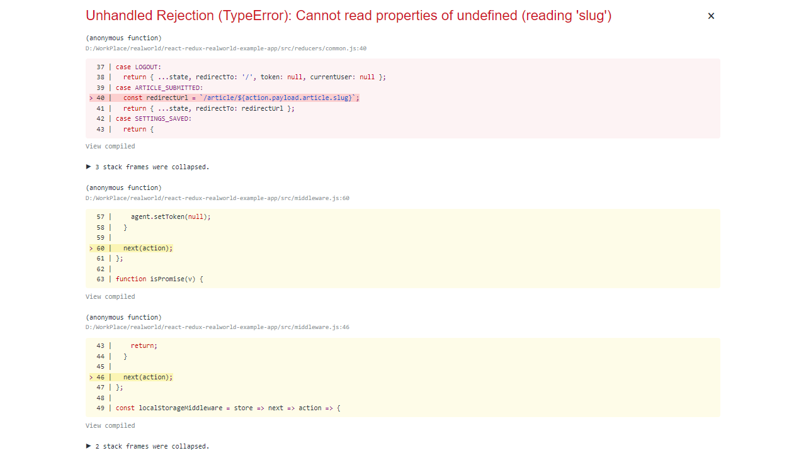
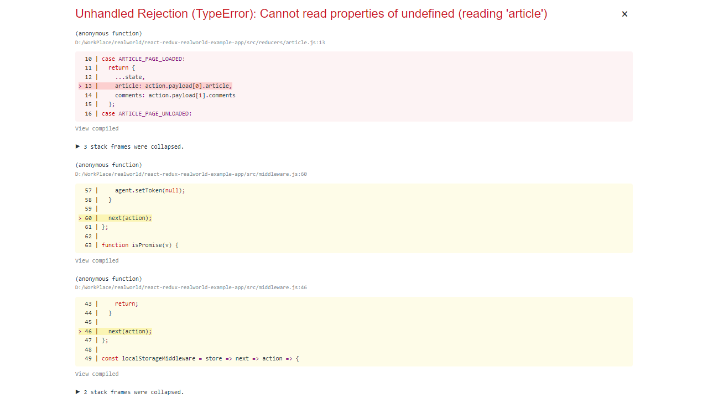
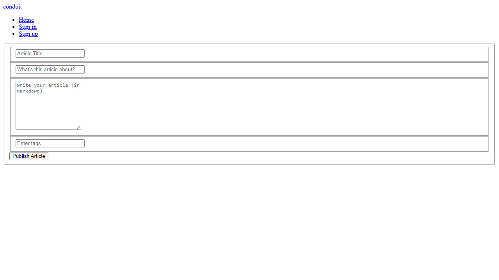

The main user journeys work: sign up, log in, write, edit and delete articles, and log out. The app is not ready for production, for three reasons:
14 issues are listed below, most severe first. Every one was reproduced and has evidence in qa-tests/results.json and qa-tests/screenshots/.
| # | Title / Summary | Steps to Reproduce | Expected vs Actual | Severity | Suspected Cause |
|---|---|---|---|---|---|
| 1 | App depends on dead external servers: no data and no styling | Clone the frontend, npm start, open :4100 | Expected: styled app, articles and login work. Actual: every API call to conduit.productionready.io fails, so the feed stays on "Loading…". The whole UI renders unstyled because demo.productionready.io/main.css returns 404. The public demo demo.realworld.io also returns 404. | Critical | API URL hardcoded in src/agent.js:6, stylesheet hotlinked from a third-party domain in public/index.html:7. No environment config and no uptime monitoring. |
| 2 | Session survives logout. The token stays valid for 60 days. | Log in, copy jwt from localStorage, click Logout, call GET /api/user with the old token | Expected: 401. Actual: 200 with the user's profile. The token decodes to exp = 60 days. | High | Stateless JWT with expiresIn: '60d' (token.utils.ts:5). Logout only clears localStorage on the client, and there's no server-side revocation. |
| 3 | Auth token stored in localStorage | Log in, then DevTools → Application → Local Storage | Expected: HttpOnly cookie. Actual: jwt key readable by any script on the page. | High | middleware.js:52 localStorage.setItem('jwt', …) |
| 4 | Weak passwords and invalid emails accepted | POST /api/users with password 1, or email notanemail | Expected: 422 with a message. Actual: 201, account created. | High | auth.service.ts only checks for blank values. No length, strength or format validation on client or server. |
| 5 | No brute-force protection on login | Send 20 wrong-password logins in a row | Expected: lockout or HTTP 429. Actual: all 20 get 403. Unlimited guessing. | High | No rate-limit middleware (e.g. express-rate-limit) |
| 6 | Malformed input returns HTTP 500 and leaks internals | (a) POST {bad json to /api/users/login (b) GET /api/articles?limit=100000&offset=-5 | Expected: 400 Bad Request. Actual: 500 with the raw parser/Prisma error message. | High | Global error handler in main.ts maps every unknown error to 500 and echoes err.message. offset/limit are passed to Prisma unvalidated (article.service.ts:82-83). |
| 7 | Logged-out users can open the editor. Other users can open my article's editor. | (a) Log out, go to /editor (b) as user B, open /editor/<userA-slug> | Expected: redirect to login / "not allowed". Actual: the form is shown, prefilled with A's content. The API correctly rejects the save with 403, but only after the user has done the work, and no error is shown. | Medium | No route guards in App.js. Authorization exists only on the API. |
| 8 | No length limits: a 10,000-character title breaks the layout | Create an article with a 10,000-character title | Expected: max-length validation. Actual: 201, 10,009-character slug/URL, page scrolls horizontally. | Medium | No max length in the form, API or DB schema. Title has no CSS word-break. |
| 9 | Publishing an empty (or duplicate-title) article crashes the app | New Post → click "Publish Article" with nothing filled in | Expected: "Title can't be blank". Actual: the API correctly returns 422, but the frontend crashes with TypeError: Cannot read properties of undefined (reading 'slug'). In production this is a blank white screen. | High | reducers/common.js:40 reads action.payload.article.slug without checking action.error. It assumes every submit succeeds. |
| 10 | Article deleted with no confirmation | Open own article → "Delete Article" | Expected: "Are you sure?" Actual: permanently deleted instantly (API 404 afterwards). | Medium | Delete handler calls the API directly, with no confirm or undo |
| 11 | Unknown article URL shows a blank page | Visit /article/does-not-exist, or press Back after deleting an article | Expected: "Article not found" page. Actual: empty page with only the navbar. | Medium | No 404 route or empty state. The Article component renders nothing when the fetch fails. |
| 12 | Editing a title silently breaks old links | Edit an article's title, then open the old URL | Expected: old link redirects. Actual: slug changes, old URL returns 404 (blank page). | Low | Slug is regenerated from the title on update, and no redirect is kept |
| 13 | Accessibility: form inputs have no labels. Mobile layout overflows. | Inspect /register. View home page at 375px width. | Expected: labelled inputs, no horizontal scroll. Actual: 3/3 inputs have only placeholders, and the page overflows horizontally at 375px. | Low | Template uses placeholder instead of <label>/aria-label. No responsive handling. |
| 14 | Missing security hardening and a failing seed script | Inspect API response headers. Run npx prisma db seed. | Expected: CORS limited to the app origin, no CSP, X-Powered-By hidden. Actual: Access-Control-Allow-Origin: *, no CSP / X-Frame-Options, X-Powered-By: Express. Seed crashes with P2002 Unique constraint failed on name. | Low | app.use(cors()) with defaults, no helmet. Seed uses create with random faker tag names that collide. |
When a user logs in, the API signs a JSON Web Token with expiresIn: '60d' and the frontend keeps it in localStorage. The server keeps no record of issued tokens. It only checks each token's signature and expiry, so any token it signed is accepted until its expiry date. "Logout" in the React app simply runs localStorage.setItem('jwt', ''). That removes the browser's copy but does nothing on the server. We showed this by calling GET /api/user with the token after logging out: it still returned 200 and the user's profile. So if a token is ever leaked (through XSS, a shared computer, a browser extension or logs), the attacker can use it for up to 60 days, and neither the user logging out nor changing their password stops it. Issue #3 makes this worse, because the token sits in storage any script can read. To fix it: (1) use short-lived access tokens (about 15 min) plus a refresh token stored in the database; (2) add a POST /api/users/logout endpoint that revokes the refresh token, or keep a tokenVersion on the user row that is bumped on logout or password change and checked in the auth middleware; (3) deliver tokens in an HttpOnly; Secure; SameSite=Strict cookie instead of localStorage. The Playwright check O1 then serves as a regression test.





